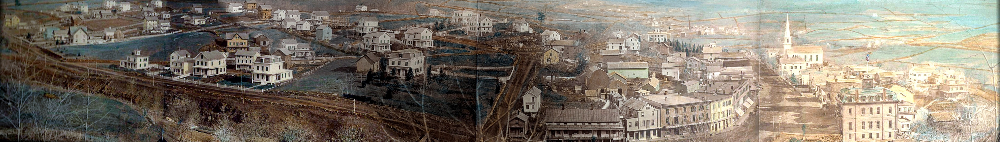
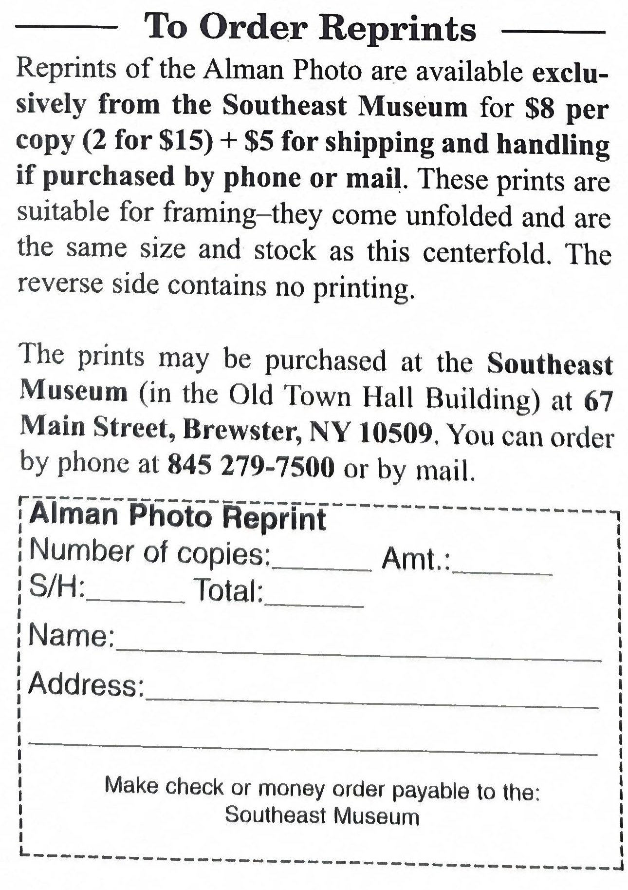

Southeast Museum · Brewster History

Left: the residential slopes above the rail line · Center: the village and depot · Right: Main Street and the Methodist church
Louis Alman set up on Marvin Mountain and turned his camera due east, catching the entire village of Brewster in a single sweep. His own studio — a small white building behind the livery stable, beside the general store — sits in the scene he photographed.
The picture was made only about twenty years after the railroad reached the village, and a great many of the houses on these slopes had just been put up by the building firm of Walter Brewster. The fields and pastures spreading across the background would, within a generation, be flooded for New York City's water supply — today they lie beneath the East Branch and Bog Brook reservoirs.
Use the Black & White toggle to see the image closer to Alman's original silver print; the color view is the Southeast Museum's hand-colored reproduction.
Original photograph by Louis Alman, December 12, 1870 (public domain). Hand-colored reproduction shared courtesy of the Southeast Museum, Brewster, New York; the three scanned sections were digitally stitched into this single panorama for display here.
Framed reprints of the Alman photograph are available exclusively from the Southeast Museum — $8 per copy (2 for $15), plus $5 shipping & handling for phone or mail orders. The prints come unfolded, suitable for framing. Order in person at the Museum (in the Old Town Hall Building), 67 Main Street, Brewster, NY 10509; by phone at 845 279 7500; or by mail using the form at right.
Visit the Southeast Museum →
Printable mail-in order form — click to enlarge